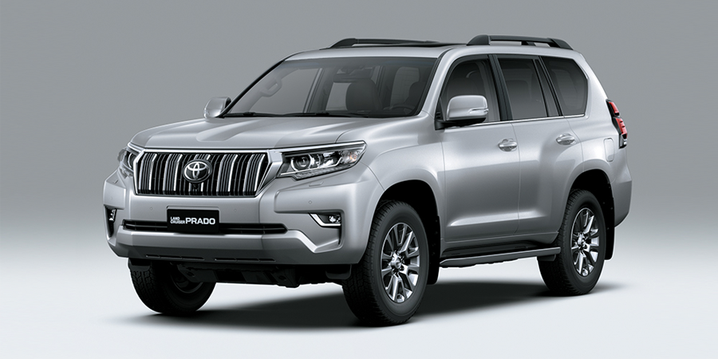
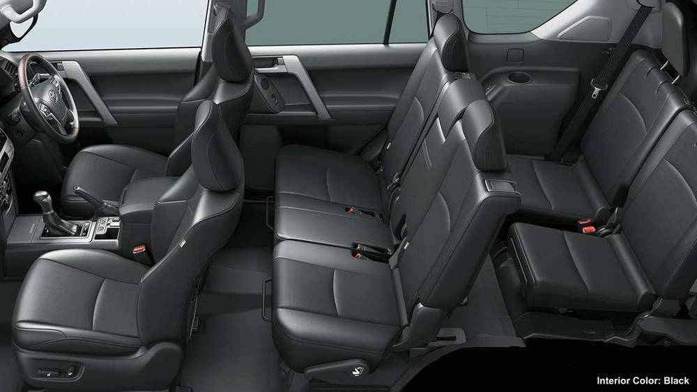

- Capacidad del tanque: 87 L.
- Motor: Turbo Intercooler - Common Rail 2755 cc, 16V DOHC, 4Cyl, D-4D.
- Potencia Hp: 201@3400.
- Pasajeros: 7.
- Llantas: 265/65 R17 (PT46/PT44), 265/55 R19 (PV48).
- Tipo de combustible: Diesel.

- LAND CRUISER PRADO 2022 La grandeza e historia del Land Cruiser Prado no es casualidad y durante años ha sido un preferido de los Toyoteros amantes de los vehículos todo terreno que disfrutan la elegancia de la ciudad y los caminos off-road. Este modelo posee grandes ventajas en cuanto a maniobrabilidad y potencia, cualidades extremadamente necesarias para conducir una camioneta de este nivel.